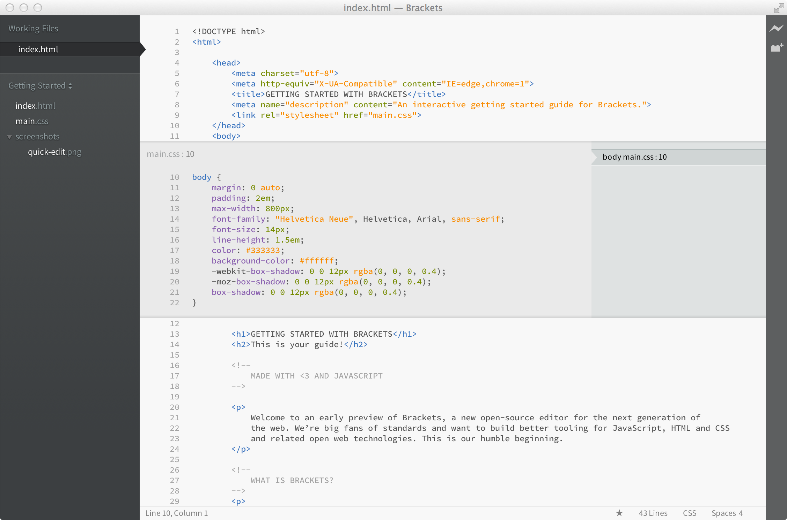

Collect Coffee Grounds
Collect Tea dust
Collect Egg Shell
Types of Mudaku -- Stone, Coconut Shell,
Apply BioFertilizer --
Azolla Cultivation
Banana Planting -
Rain Harvesting - During rainy season
Visit --- Vanagam
Collect green leaf from Garden
Moodaku - Increase microorganism in soil. Prevent water evaporation.
Plant - Ground nut.
Plant - Corn ()
Prepare an Instrument
Watch DD - News (Farming)
Radio Velanmai News
Buy Earthworms
Earn Money through Farming
Earthworms and Msushroom planting
Waste Resource -- Garden waste, Tea shop, Egg shell,
Holiday spot --
Theni --
sargovindan.github.io
facebook - mypages
இன்றைய உணவுப்பழக்கத்தினால், சிறுநீரக கல் பிரச்சினை என்பது பெரும்பாலானவர்களுக்கு சாதாரணமாகிவிட்டது.
Want to see it in action? Place your cursor on the tag above and press Cmd/Ctrl + E. You should see a CSS quick editor appear above, showing the CSS rule that applies to it. Quick Edit works in class and id attributes as well. You can create new rules the same way. Click in one of the tags above and press Cmd/Ctrl + E. There are no rules for it right now, but you can click the New Rule button to add a new rule for .
If you have Google Chrome installed, you can try this out yourself. Click on the lightning bolt icon in the top right corner of your Brackets window or hit Cmd/Ctrl + Alt + P. When Live Preview is enabled on an HTML document, all linked CSS documents can be edited in real-time. The icon will change from gray to gold when Brackets establishes a connection to your browser. Now, place your cursor on the tag above. Notice the blue highlight that appears around the image in Chrome. Next, use Cmd/Ctrl + E to open up the defined CSS rules. Try changing the size of the border from 1px to 10px or change the background color from "dimgray" to "hotpink". If you have Brackets and your browser running side-by-side, you will see your changes instantly reflected in your browser. Cool, right?Today, Brackets only supports Live Preview for HTML and CSS. However, in the current version, changes to JavaScript files are automatically reloaded when you save. We are currently working on Live Preview support for JavaScript. Live previews are also only possible with Google Chrome, but we hope to bring this functionality to all major browsers in the future.
To try out Quick View for yourself, place your cursor on the tag at the top of this document and press Cmd/Ctrl + E to open a CSS quick editor. Now simply hover over any of the color values within the CSS. You can also see it in action on gradients by opening a CSS quick editor on the tag and hovering over any of the background image values. To try out the image preview, place your cursor over the screenshot image included earlier in this document.